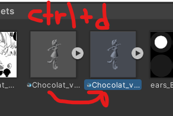
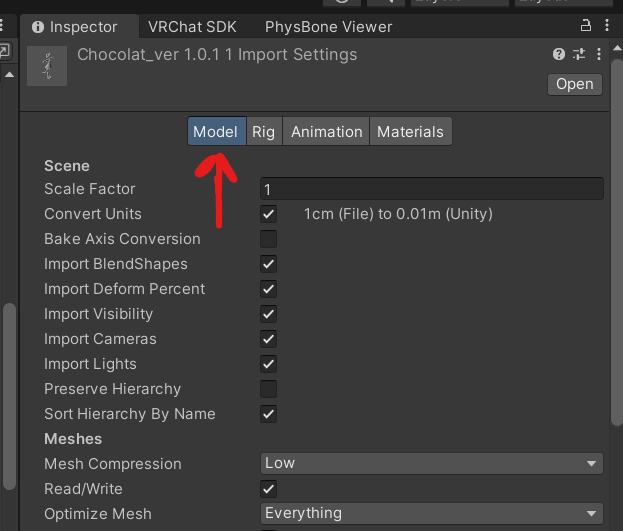
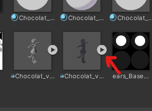
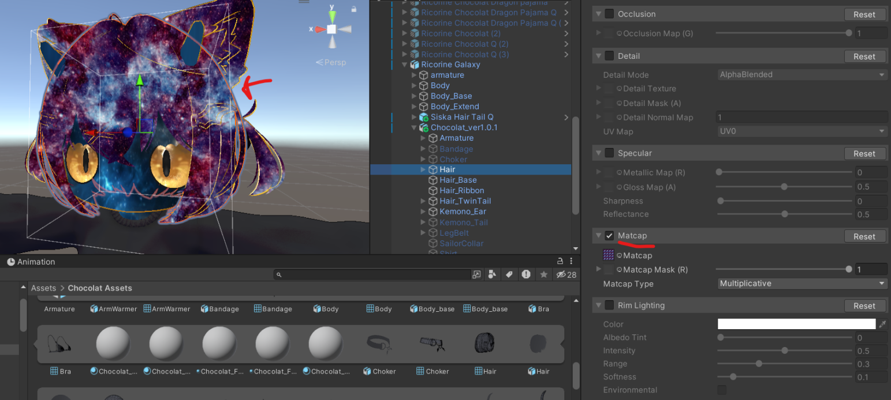

Parallax (No Blender)

This is a full in-depth tutorial of a short description shared by a discord member in another post. This only encompasses the first part of the post, with the unity-only parallax effect with only one layer that gives the chowder effect.
First, you need to find the fbx of the mesh you want to have the efffect. Click on the mesh in the hierarchy, and click the mesh in the inspector. This will bring you to the fbx in Assets.

You can click on the arrow to close the fbx in Assets, and then click on the fbx and Ctrl + d to duplicate it.

Click on the duplicated fbx, and in the inspector go to Model

Scroll down and find the normals setting, and set it to None. Then click Apply

Now, find the mesh named the same as the original mesh on the object you want the effect on. Look through the new fbx that we duplicated and edited.


Click and drag that mesh into the mesh slot on the object.

Now, set the material of the object to have a matcap. The matcap should be the image you want parallaxed. This will create the effect.

If you have multiple objects using the same fbx that you want to have the parallax effect, you can simply use the duplicated fbx to find the matching meshes for those objects. You don't have to keep duplicating the same fbx for each object. Each fbx only needs one duplicate. This will create the chowder effect you want for quest.